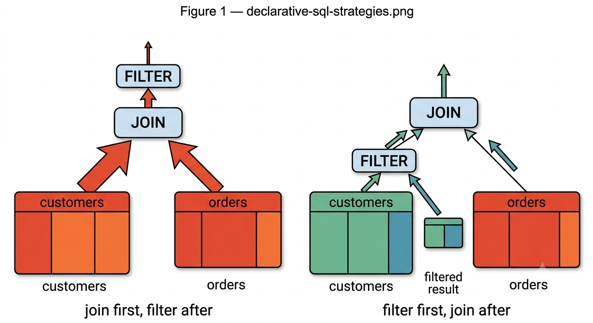
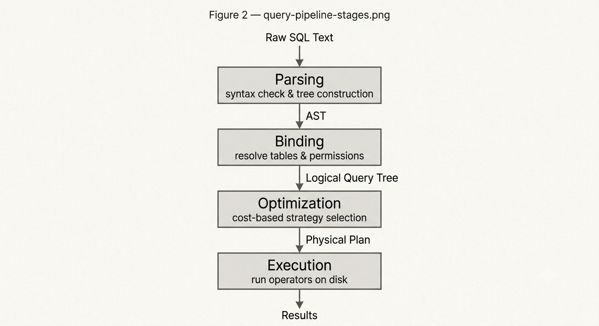
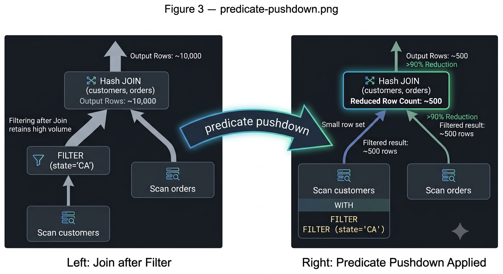
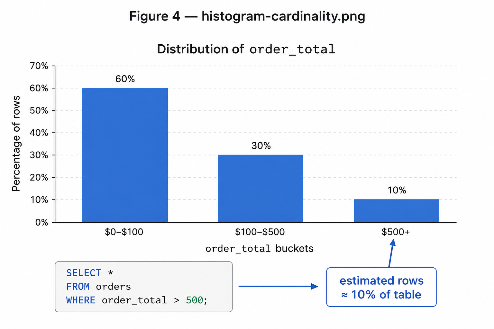
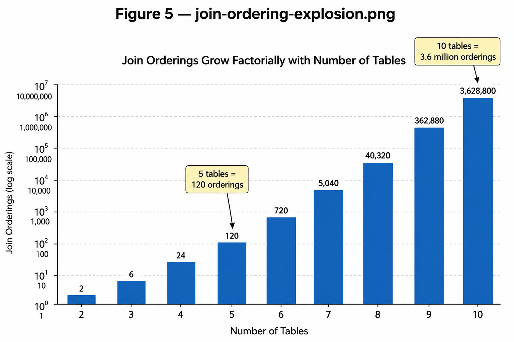
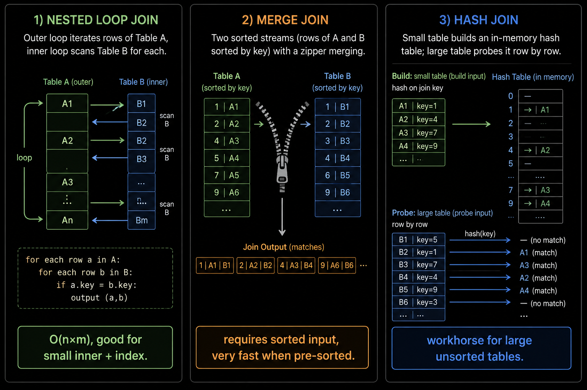
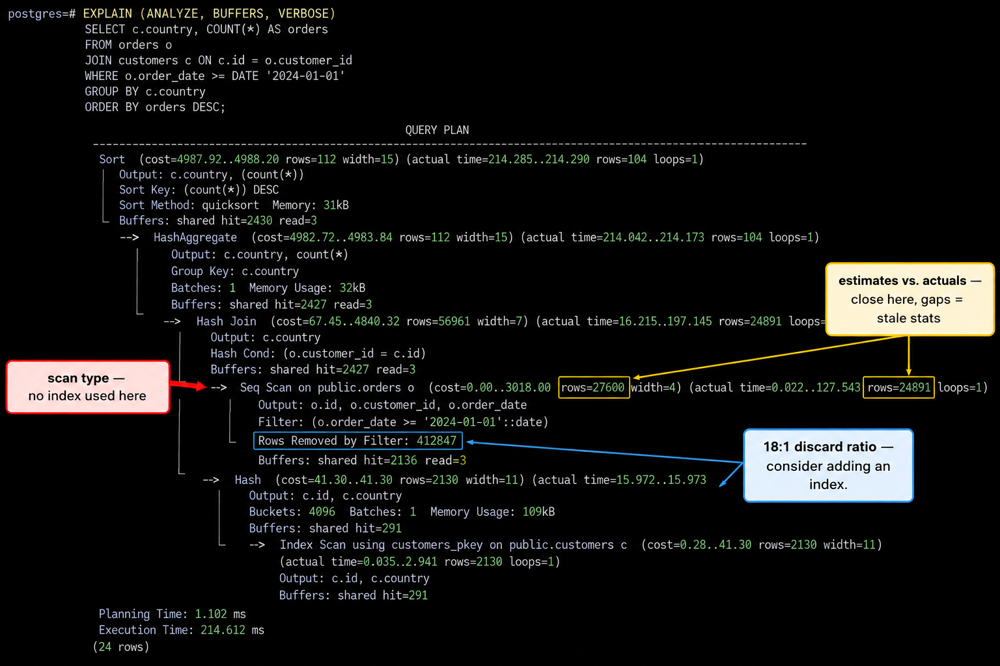

In the last blog, we watched a database perform what feels like magic: finding a single row among ten million in a handful of milliseconds. The secret was the index, a separate sorted structure that maps column values to row identifiers or, in some storage engines, directly to the rows themselves. By the end, we had a complete picture of how a single known record gets retrieved efficiently.
But here is the problem. Nobody writes queries like that.
Real applications do not ask "give me the row where id = 42." They ask things like: "Find all orders placed in the last 30 days by customers in California, group them by customer, sum the totals, and sort by descending amount." That query touches three tables, filters by a date range and a geography, performs an aggregation, and sorts the result. A single index usually is not enough to solve queries like this on its own. The database still has to decide join orderings, aggregations, and execution strategies.
This problem of translating a request into a strategy is what the query optimizer was built to solve. It is, arguably, the most intellectually interesting piece of software in the entire database stack. Today we pull it apart.
SQL Is Declarative. The Database Figures Out the Rest.
When you write a SQL query, you are not writing instructions. You are writing a description. You describe the shape of the data you want (which tables, which conditions, which columns) and hand it to the database. The database then decides, entirely on its own, how to actually retrieve it.
This is called being declarative, and it is SQL's great strength and its great source of complexity. The same SELECT statement can be physically executed in dozens of different orderings. The database might start by joining two large tables together and then filtering the result, or it might filter each table down first and then join the much smaller intermediate results. The answer is identical either way. The cost is not even close.
Consider a query that joins orders and customers and filters for California customers with orders over $500. If there are five million orders and only ten thousand California customers, filtering customers first reduces the join to a trivial operation. Joining first and filtering after means the database wrestles with five million rows before discarding most of them. The right order can be hundreds of times faster.
The optimizer's job is to find the right order, and to do it in milliseconds, before the query even begins executing.

Figure 1. The same SQL query executed two ways: filtering before the join leaves a fraction of the rows; filtering after means processing the full product of both tables.
Before the Optimizer Even Wakes Up: Parsing → Binding → Logical Plan
Before the optimizer touches your query, three other stages have already run. They are fast and mostly invisible, but they produce the input the optimizer needs.
Parsing is where the database reads your raw SQL text and checks that it is valid. It verifies syntax (parentheses match, keywords are in the right place, the statement is grammatically correct) and converts the text into an Abstract Syntax Tree (AST). The AST is a structured representation of the query's logic: a tree of nodes representing operations, conditions, and expressions.
Binding (sometimes called algebrization) is where the database cross-references the AST against its own catalog. It asks: do these tables actually exist? Do the columns referenced belong to those tables? Does this user have permission to read them? Data types are resolved, ambiguous column names are qualified, and any errors here produce the familiar messages like "column does not exist" or "permission denied." The output is a Logical Query Tree, which has the same structure as the AST but is now fully anchored to real objects in the database.
Optimization is where the logical plan gets handed to the optimizer to be transformed into a physical execution plan. This is the step we spend the rest of this blog on.
Raw SQL Text
↓
Parsing → Abstract Syntax Tree (AST)
↓
Binding → Logical Query Tree
↓
Optimization → Physical Execution Plan
↓
Execution → ResultsThe distinction between logical and physical matters. A logical plan says "join these two tables." A physical plan says "join these two tables using a hash join, after filtering orders down to those placed in the last 30 days, reading customers via an index seek on the state column." The logical plan describes what. The physical plan describes how.

Figure 2. The four-stage pipeline every SQL query passes through before a single row is read from disk.
Phase 1: Logical Transformations: Cleaning Up Before Committing
The optimizer's first move is not to evaluate costs. It is to simplify. Before any statistics are consulted or execution strategies considered, the optimizer applies a set of rule-based rewrites to the logical query tree. These transformations are always beneficial, so they are applied unconditionally.
Predicate Pushdown is the most impactful of these. A predicate is any filter condition: a WHERE clause, a JOIN condition, or a HAVING filter. Predicate pushdown moves these filters as early in the execution as possible, as deep down the query tree as they can go. The intuition is simple: the sooner you discard rows you do not need, the less work every subsequent operation has to do.
If you are joining orders and customers and filtering for customers.state = 'CA', the optimizer pushes that filter to run against customers before the join. Instead of joining five million orders against five million customer records and then filtering, you join five million orders against ten thousand California customers. Every stage downstream gets smaller input.

Figure 3. Predicate pushdown moves filter conditions as deep into the query tree as possible, shrinking intermediate results before expensive operations like joins.
Constant Folding handles expressions that can be evaluated at planning time. If your query contains WHERE price > (10 * 5), the optimizer evaluates the expression during planning and substitutes the literal value. The expression is not re-evaluated for every row during execution.
Contradiction Detection is a small but elegant optimization. If a query contains a logically impossible condition like WHERE status = 'active' AND status = 'deleted' or the classic WHERE 1 = 2, the optimizer detects the contradiction immediately and generates a trivial plan that returns an empty result without accessing the table.
View Expansion and Flattening handles subqueries and views. When possible, the optimizer rewrites them into equivalent join expressions in the main query block. This allows the optimizer to see the full picture when it begins exploring join orderings, rather than treating subqueries as opaque black boxes.
These rewrites happen before any cost calculation. They are free improvements, the optimizer's way of making sure it is working on the simplest possible version of the problem before doing the expensive work.
Phase 2: Cardinality Estimation and the Optimizer's Crystal Ball
After simplification, the optimizer faces its hardest problem: predicting the future.
Every decision the optimizer makes downstream (which join algorithm to use, which index to seek, which table to read first) depends on knowing roughly how many rows each step will produce. The number of rows flowing out of an operation is called its cardinality, and estimating it accurately is the single most important thing the optimizer does. Get it right, and the plan is fast. Get it wrong, and the optimizer confidently builds an elaborate strategy for entirely the wrong problem.
The optimizer does not read your data to produce these estimates. It reads statistics about your data: compact summaries the database collects and stores separately.
Histograms divide a column's value range into buckets and track how many rows fall into each. A histogram on an order_total column might tell the optimizer that 60% of orders are between $0–$100, 30% are between $100–$500, and only 10% exceed $500. When a query filters for orders over $500, the optimizer consults histogram statistics and estimates that the predicate will match roughly 10% of the table's rows.

Figure 4. A histogram on order_total tells the optimizer how rows are distributed across value ranges, enabling accurate cardinality estimates for filter conditions.
Phase 3: The Search Space and Why This Is Hard
With cardinality estimates in hand, the optimizer begins exploring possible execution plans. And this is where the problem becomes genuinely hard.
For a query that joins two tables, there are a small number of possible orderings. For three tables, the number is larger but manageable. For five tables, there are 120 possible join orderings. For ten tables, there are over three million. For fifteen tables, the number exceeds a trillion. This is the combinatorial explosion at the heart of query optimization, and it is why the optimizer cannot simply try everything.

Figure 5. Join orderings grow as N-factorial. At ten tables the search space already exceeds three million; exhaustive enumeration becomes impossible.
Modern database engines use a search framework called the Volcano/Cascades model to navigate this space. Rather than enumerating plans one by one, it works with equivalence groups, which are sets of logical operations that produce the same result through different physical strategies. The optimizer explores transformations within and between these groups, progressively refining candidates.
The memory structure that makes this tractable is called the Memo. The Memo stores equivalent execution subtrees compactly, without physically duplicating the operator trees they represent. When the optimizer discovers that two different join orderings produce equivalent intermediate results, it records both in the same Memo group. This means the optimizer can reason about an enormous number of plan variants without actually materializing each one in memory.
Even with the Memo, truly exhaustive search is impossible at scale. Because exhaustive search becomes prohibitively expensive, optimizers rely on heuristics, pruning strategies, and search limits that eventually stop exploring additional plans and execute the best candidate found so far.
Query with N tables
↓
N! possible join orderings
↓
Volcano/Cascades search framework
↓
Memo structure (compact equivalence groups)
↓
Heuristics, pruning, and search limits
↓
Best candidate execution planChoosing Physical Operators: Where Strategy Meets Reality
The Cascades search explores logical transformations. But at some point, the optimizer has to commit to physical operations: actual algorithms that will run on actual hardware. Logical "scan this table" becomes one of three concrete access strategies. Logical "join these tables" becomes one of three concrete join algorithms.
Access Methods are how the optimizer reads rows from a table:
- A Clustered Index Scan reads the table in primary key order, which is efficient when you need a large contiguous range of rows.
- An Index Seek jumps directly to a specific location in an index, the fast path for highly selective filters on indexed columns.
- A Table Scan reads every page in the table sequentially, which is expensive for large tables, but occasionally faster than an index seek when the filter is so non-selective that you would end up reading most of the table anyway, since sequential reads are significantly faster than the random I/O that index traversal requires.
Different database engines use different names for these access methods, but the underlying ideas are broadly similar.
Join Algorithms are where the cardinality estimates from Phase 2 do their most visible work:
Nested Loop Join works by iterating over every row in the outer table and, for each one, looking up matching rows in the inner table. It is fast when the inner table is small or has a useful index, and the outer table's filtered result is small. Without a useful index, cost can approach the product of the two input sizes.
Merge Join works by sorting both inputs on the join key and then walking through them simultaneously, like a zipper. When a match is found, it is emitted; when one side advances past the other, both sides step forward. Merge join is extremely fast when both inputs are already sorted, for example when both sides are being read via an index that orders them on the join column. If sorting is required first, that cost has to be weighed against the savings from the merge itself.
Hash Join works by reading the smaller input and building a hash table in memory, keyed on the join column. It then streams the larger input through, probing the hash table for matches. Hash join is the workhorse for large, unsorted datasets; it requires no pre-sorted input and handles joins between large tables efficiently, as long as the hash table fits in memory. When it does not, the database spills to disk, which is expensive.

Figure 6. The three physical join algorithms: nested loop iterates every outer row against the inner; merge zip-walks two sorted streams; hash builds an in-memory lookup table from the smaller side.
The optimizer chooses among these based entirely on the cardinality estimates it produced in Phase 2. If it thinks the filtered result of one table is small, it might choose a nested loop. If it thinks both sides are large and unsorted, it reaches for a hash join. This is exactly why stale statistics cause bad plans: the optimizer picks a nested loop expecting a small inner table, discovers it is actually enormous at runtime, and grinds through the query in time that is orders of magnitude worse than a hash join would have taken.
Plan Caching: The Optimizer's Shortcut
Building a plan is not free. The cardinality estimation, Cascades search, and physical operator selection described above require CPU time: not much for simple queries, but non-trivial for complex ones involving many tables. On a busy database handling thousands of queries per second, re-running the optimizer on every request would become a meaningful cost.
The solution is the Plan Cache. Once the optimizer selects a physical execution plan, that plan is compiled and stored. When the exact same query text arrives again, the database checks the plan cache first. On a hit, it bypasses the optimizer entirely and executes the cached plan directly.
This is a significant win for applications that run the same queries repeatedly, which is most applications. A user profile fetch, a product page load, an authentication check: these queries execute millions of times a day with different parameter values but identical structure. The plan cache means the optimizer earns its cost once and amortizes it across every subsequent execution.
EXPLAIN ANALYZE: Catching the Optimizer Being Wrong
In the last blog, we introduced EXPLAIN as a way to see what plan the optimizer chose. EXPLAIN ANALYZE goes further: it actually runs the query and shows you what happened, side by side with what the optimizer predicted.
EXPLAIN ANALYZE
SELECT c.name, SUM(o.total) as revenue
FROM orders o
JOIN customers c ON o.customer_id = c.id
WHERE o.created_at > NOW() - INTERVAL '30 days'
AND c.state = 'CA'
GROUP BY c.name
ORDER BY revenue DESC;The output in PostgreSQL looks something like this:
Sort (cost=12845.23..12847.73 rows=1000 width=40)
(actual time=183.412..183.491 rows=847 loops=1)
-> HashAggregate (cost=12789.00..12799.00 rows=1000 width=40)
(actual time=183.201..183.312 rows=847 loops=1)
-> Hash Join (cost=3241.00..12651.00 rows=27600 width=36)
(actual time=28.341..176.203 rows=24891 loops=1)
Hash Cond: (o.customer_id = c.id)
-> Seq Scan on orders
Filter: (created_at > (now() - '30 days'::interval))
Rows Removed by Filter: 412847
-> Hash (cost=2890.00..2890.00 rows=28080 width=24)
(actual time=27.203..27.203 rows=10423 loops=1)
-> Index Scan using idx_customers_state on customers
Index Cond: (state = 'CA')
Three things to read in every EXPLAIN ANALYZE output:
The scan type tells you how the database accessed each table. "Index Scan" means it used an index. "Seq Scan" means it read the whole table. "Index Only Scan" means it never touched the main table at all, because everything it needed was in the index leaf. Unexpected Seq Scans on large tables are the first thing to look for.
The cost estimates versus actual times tell you how well the optimizer's model matched reality. The cost= numbers are the optimizer's pre-execution predictions in internal units. The actual time= numbers are real wall-clock milliseconds. Large gaps here are diagnostic signals. If the optimizer estimated 100 rows and got 100,000, its cardinality estimate was wrong, which usually means statistics are stale.
Rows removed by filter tells you how selective your filters actually were. If a sequential scan removed 412,000 rows to produce 24,000, that is an 18:1 discard ratio, a strong signal that an index on that filter column might be worth adding.

Figure 7. An annotated EXPLAIN ANALYZE output: scan types reveal index usage, cost vs. actual gaps reveal stale statistics, and rows-removed ratios flag missing indexes.
EXPLAIN ANALYZE does not just reveal what the optimizer decided. It reveals where the optimizer's model of your data diverged from reality. That divergence is almost always where slow queries are hiding.
Key Takeaways
- SQL is declarative: you describe what you want, and the optimizer decides how to retrieve it. The same query can be executed in many orderings with wildly different costs.
- The pipeline has three pre-optimization stages: parsing converts SQL to an AST, binding anchors it to real catalog objects, and the logical plan is handed to the optimizer.
- Logical transformations are free wins: predicate pushdown, constant folding, contradiction detection, and view flattening happen before cost estimation and are always applied.
- Cardinality estimation drives everything: the optimizer's choice of join algorithm, access method, and join ordering all depend on how many rows it expects each operation to produce. Stale statistics are the most common root cause of plan regressions.
- The search space is exponential: N tables means N! join orderings. The Volcano/Cascades framework with a Memo structure makes this tractable. Modern optimizers rely on heuristics, pruning strategies, and search limits to avoid exhaustive enumeration.
- Physical operators are chosen based on estimates: nested loops for small inputs with index access, merge joins for pre-sorted data, hash joins for large unsorted datasets. The wrong estimate means the wrong algorithm.
- Plan caching amortizes optimizer cost: repeated queries reuse cached plans.
- EXPLAIN ANALYZE is the diagnostic tool: compare estimated rows to actual rows. Gaps reveal where the optimizer's model broke down, which is almost always where the performance problem lives.
Putting this alongside the progression from our previous blog:
File Systems
↓
Data is stored and organized on disk
Database Indexes
↓
Specific data is found without scanning everything
Caching (Redis)
↓
Repeated access becomes essentially free
Query Optimization ← you are here
↓
Complex queries are executed efficiently at scale
Distributed Databases ← next
↓
What happens when one machine is no longer enoughWe have now followed a query from the moment it is typed to the moment a physical plan runs. The optimizer makes all of this look automatic, and on a single, well-configured machine, it mostly is.
But every system we have discussed so far makes a quiet assumption: one machine, one disk, one shared memory space. In practice, the most demanding applications push past what any single node can handle. When your data grows beyond what fits on one server, or when your write rate exceeds what one machine can sustain, you need a fundamentally different architecture, one where the ideas from indexing and query optimization do not disappear but fracture across dozens or hundreds of machines and become dramatically harder to reason about.
That is exactly where we go next.
Series · How Databases Actually Work
← Part 1: How Databases Find Your Data in Milliseconds